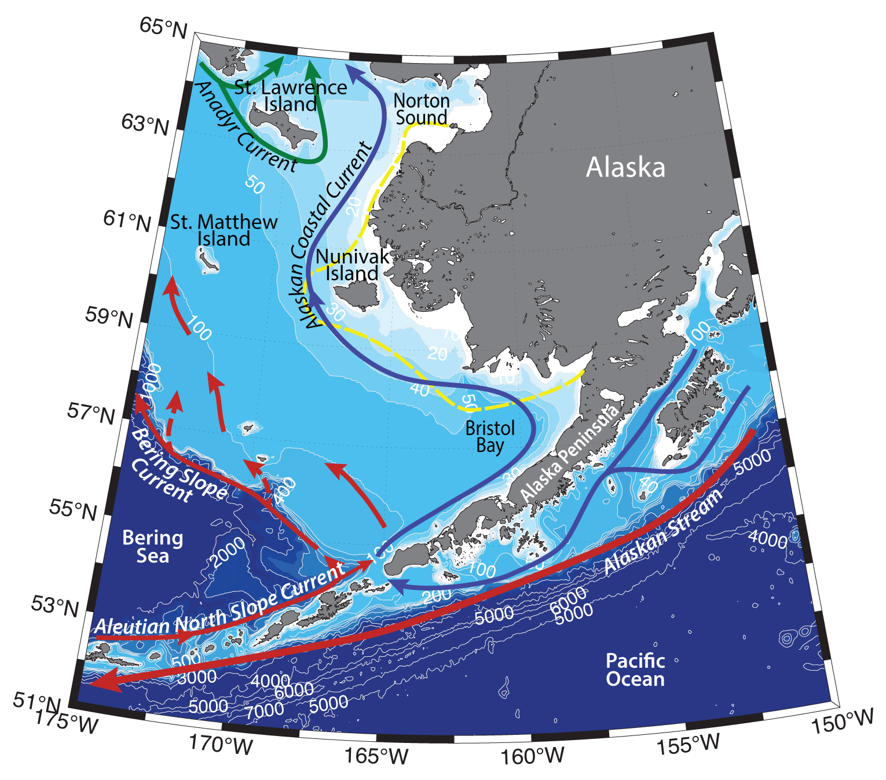

Schematic water circulation patterns and geographical place names in the Eastern Bering Sea region. Adopted from Stabeno et al. (1999), Baker et al. (2020). Dashed line marks the studied region.
Aleutian Islands ridge greatly influences ocean circulation in the Bering Sea. Water exchange between Bering Sea and the rest of the Pacific Ocean happens through the straits between Aleutian Islands. They are mostly rather shallow and don’t allow for the exchange of deep waters (which happens through the Kamchatka strait in the eastern part of the sea instead). Various studies suggest that there is an inflow of subsurface and surface waters through 100-200 m deep straits, with the accompanying intense turbulent mixing, enhanced by the tidal currents (for example through Adak, Atka, Tanaga, Seguam, Samalga Passes; Stabeno et al., 2005).
Hydrography of the southern part of the Bering Sea is determined by the shallow shelf, intense tidal currents and influence of the Pacific Ocean waters, which enter the sea through the narrow straits between Aleutian Islands, river discharge, and seasonal ice cover.
Climate of the Bering Sea region is influenced by the interaction of Aleutian Low with Siberian High and Beaufort High. Gradient between these two centers of action determine the location and strength of the storms in the sea. Atmospheric processes control the ice distribution in the Bering Sea, hence determine the water temperature in spring and summer (Stabeno et al, 2012). Bering Sea starts to freeze up in October – November, maximum sea ice extent is usually observed in February – May, and the melting season usually starts in the end of April (Wang et al., 2009).
In Bering Sea wind-driven polynyas form during wintertime south of all major islands (e.g. St. Lawrence, St. Matthew, Nunivak islands) and peninsulas, due to prevailing northerly winds in the region (e.g. Grebmeier and Cooper, 1995; Wang et al., 2009). Such polynyas act as important localized centers of primary production in these regions.
In the Bering Sea tides play an important role in the formation of the hydrographical structure, as well as redistribution of dissolved matter, and carrying organisms (Kowalik, 1999). They enhance mixing of the water column and influence the dynamic of the chemical and biological parameters (e.g. Blauw et al., 2012) – especially bring the nutrients from the bottom back into the water column. Model studies (Kowalik, Stabeno, 1999) have suggested the existence of a nutrients flux from the deeper parts of the sea up to the shelf via tidal movements, especially in the Aleutian straits, Bristol Bay and around Nunivak island. Cold and rich in nutrients waters on the surface in these regions can sometimes be brought up by the upwelling events (Kelley et al., 1971; Kelley, Hood, 1971), however, many studies suggest that the reason is rather turbulent mixing of the water column due to strong tides (Mordy et al., 2005). The nutrients are further transported northwards by the Bering Sea currents into the Chukchi Sea.
The tidal currents in the Bristol Bay and in the straits of Aleutian Islands may reach up to 100 cm/s (Kowalik, 1999). In Akutan Pass, for example, the tidal currents were measured to be greater than 160 sm/s (Stabeno et al., 2005). Rossby waves can too form anomalous currents in the surface layer, which substantially change surface winter temperatures in the North Pacific (Osafune et al., 2014).
Several hydrographic fronts are formed along the isobaths on the East Bering Shelf. The most shallow – inner structural front is located along the 50 m isobath, and is dividing waters, that are homogenous due to tidal mixing close to shore from the two-layered water column further offshore (Schumacher et al., 1979; Kinder, Schumacher, 1981; Danielson et al., 2011). Wind forcing influences the position of this front and enhances mixing of the water column. Convergence of flow is inherent to the middle front. The furthest outer front is located above the shelfbreak between the shelf waters and waters of the deep Aleutian basin (Kinder, Coachman, 1978). These fronts are places of concentration of marine life due to enhanced vertical flow of nutrients from the bottom waters to the surface (Coachman, 1986; Kachel et al., 2002).
Several large-scale currents carry waters across Eastern Bering Shelf. Alaskan Coastal Current (ACC) originates from the river runoff into the Gulf of Alaska and is further fueled by the Kuskokwim river discharge (38 km3/year annually, or from 170-450 m3/s in winter to 2000-11000 m3/s in May-June) into the Bristol Bay (Aagaard et al., 2006; Dürr et al. 2011). ACC carries warm and fresh Alaskan Coastal Waters northwards around the Alaska Peninsula (ACW; e.g. Paquette and Bourke, 1974). The mean transport of ACC is greater than 1.2 Sv (1 Sv = 106 m3 s-1) close to Kodiak Island. By the time the current reaches the Unimak Pass 75% of the volume is lost due to the interaction with the shore, bottom friction, and outflow from the shelf into the deeper parts of the ocean (Stabeno et al., 2005). The leftover waters partly turn to the north and flow into the Bering Sea through the Unimak Pass (<100 m deep, 20-40 km wide), while another part continues to the west and could be advected into the sea further through the Umnak, Akutan and Samalga straits (Ladd et al., 2005). The transport through the Unimak Pass (approximately half of which is baroclinic and half barotropic) is almost always northwards and is subject to large seasonal variability (Schumacher et al., 1982; Stabeno et al., 2002a) and prone to wind forcing. The Pacific inflow through the Unimak Pass further partly is advected along the outer part of the Eastern Bering Shelf following the 100-180 m isobaths. Another part of the inflow can divert to the north-east, following the Alaska Peninsula coast. The inflow through the Unimak Pass is known to supply lots of nutrients to the South-eastern Bering Shelf, by mixing with the subsurface waters of the Bering Canyon on its way into the sea (Stabeno et al., 2002a). ACC on the Bering Shelf proceeds northwards and flows into the Chukchi Sea through the eastern side of Bering Strait. This narrow (~10-20km) surface-intensified current carries warm and fresh (T > 3°C, S < 32.5 – TS characteristics are based on in situ measurements, Pisareva et al., 2015a,b) Alaskan Coastal Water (ACW).
Alaskan Stream (AS) is formed in the Gulf of Alaska as well, and is advected westwards along the Alaska Peninsula, Aleutian and Commander islands, entering the Bering Sea through the straits between islands. It is the primary source of Pacific waters in the Bering Sea, from which the current system and the majority of water masses of the Bering Sea originates. AS is about 100 km wide and more than 5000 m deep and is located seawards from the ACC (Reed, 1984; Stabeno, Reed, 1991; Stabeno et al., 2005). It is known to be a rather intense current, with velocities varying from 40-65 cm s-1 in the western wide part to 70-95 cm s-1 to the east of 180°E (Stabeno, Reed, 1994). AS carries relatively fresh water in the surface layer and warm water in subsurface layer.
The calculations of Alaskan Stream transport are complicated because of the number of mesoscale eddies influencing the current. Various studies estimate the transport to be 8-28 Sv (dynamic method of Reed, Stabeno, 1999), 27.5±6.5 Sv (direct measurements of Onishi, Ohtani, 1999), 34-44 Sv (numerical modeling Maslowski et al., 2008). Assimilation of ship, buoy and altimetry data by Panteleev et al. (2012) assessed the transport of AS in the top 2000 m to be 24.3±6.7 Sv.
Bering Slope Current (BSC) is a current flowing northeastward along the eastern Bering Shelf. It is more intense during cold season (more than 10 cm/s speeds) and the core of the current is closer to the shelf break, compared to warm season (statistically negligible speeds north from the 58.5°N; Ladd, 2014). This coincides with a hypothesis of formation of a westward flow across the Aleutian Basin during summertime (Stabeno, Reed, 1994). The maximum modeled width of the current is estimated to be 150 km (Okkonen, 1993). The maximum transports of the current were observed to be 14.6 Sv in February 2010 (Stabeno, Reed, 1994).
Currents over the broad part of the Eastern Bering Shelf are mainly determined by tides and are have quazi-permanent character. Tidal currents are about 25 – 55 cm/s (Kowalik, 1999; Stabeno et al., 2010). The main flow is northwestwards along the isobaths (Schumacher, Kinder, 1983; Schumacher, Reed, 1992).
Circulation in the Bering Sea is prone to large seasonal variability. During wintertime cyclonic circulation in the southern Bering accelerates (Overland et al., 1994), which also intensifies the water exchange between the Bering Sea and Pacific Ocean through the straits in Aleutian Islands (Johnson et al., 2004). The opposite is true for the flow through Bering Strait, which is the strongest during summertime (Aagaard et al., 1985a; Woodgate, 2005a; Danielson et al., 2014).